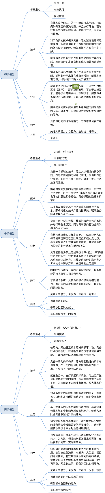
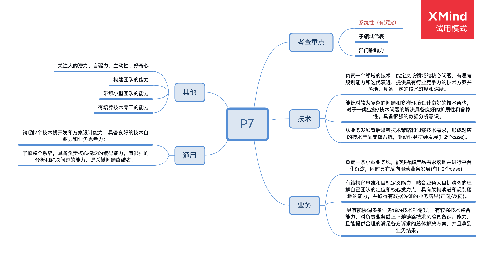
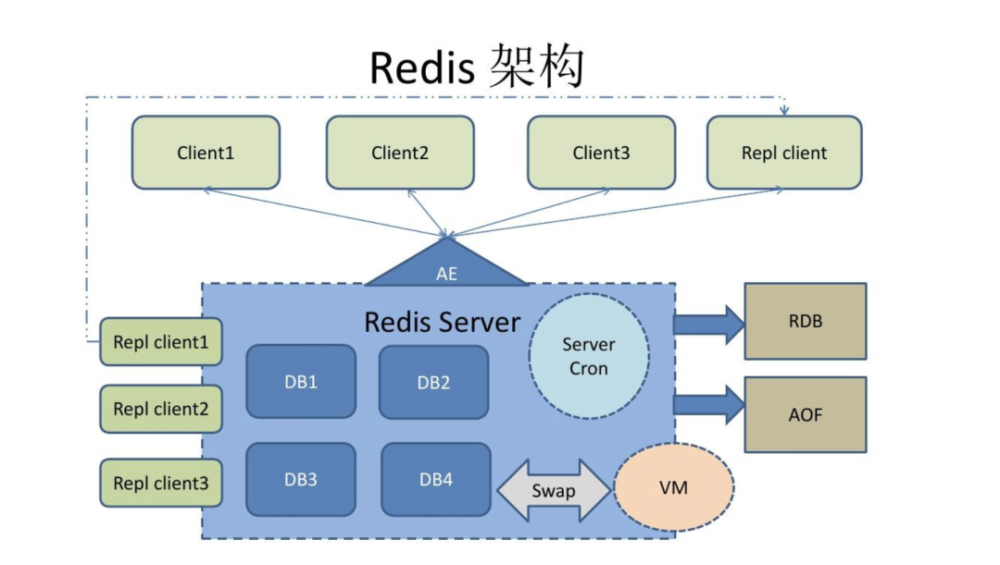

概述
- 本篇文章用于回答以下几个问题:
-
- 同样是SRE,你凭什么比别人优秀? (换言之一个优秀的SRE应该具备哪些关键特质)
-
- 使用阿里P6、P7的能力模型, 方便评估自己/他人处于哪个阶段.
一个优秀SRE应该具备的特质
- P6做P7的事情，同时还要有P8的思维.
- 团队内部讨论方案, 先想清楚，发出来给大家说明白, 再具体执行.
- 没有调查就没有发言权。要用数据说话.
- 拿数据说工作成果, 要有业务成果, 比如
0 ～ 1,1 ～ n,发现重大隐患,突破重大难题. - 强大的同理心。 站在当事人的角度和位置上，客观的理解当事人的内心感受，设身处地的去体谅他人，帮他们解决问题.
- 自动自发--不要事事等人交代.
- 爱总结,爱分享(
总结是进步的阶梯, 分享是快乐的源泉).
以下转载自军哥手记, 参考文档:
阿里P6应该具备的能力

1.技术
按以上的思维导图(P6这边是初级模型)，技术部分提炼为三点：
1、有技术攻坚能力，就一个单点技术问题，可以提供有深度的解决方案，并且执行落地；面对较复杂的技术问题有自己的解决方法，有沉淀可输出。
解读：比如缓存被击穿问题，导致数据库高负载并最终变为应用系统不可用，此时我们需要去诊断 Redis 集群被击穿的原因，当然有可能因为缓存的 value设计不合理导致占用空间太大，也有可能是缓存的超时设计不合理等等，我们需要通过现场还原真相，通常的办法是先去看看 Redis 的命中率，事故的现场分析出现问题机器的堆栈信息。
从问题的表面直到内核，解决这种疑难问题的顶层思路是从整个缓存的使用链路，缓存相关的监控信息入手，甚至业务上的一些数据变化或是否有新的代码上线等角度。
并且对每一个重大线上问题事后要形成故障报告沉淀，这些惨痛的经验都将成为团队新人引以为戒的案例。
2、对于负责的技术模块具备一定的架构设计和选型能力，能清晰理解上下游技术团队相关技术的架构设计和原理；对通用领域技术方案有一定了解。
解读：比如我负责电商 C端 的订单系统，我需要根据我的日订单量和业务复杂度来设计系统架构，核心数据落到关系型数据库，非核心数据针对场景可以考虑 Redis 或者 MongoDB，另外我也需要了解上游比如推荐系统一些原理和业务特性，也需要思考下流的履约系统的业务特性。
当然对 MQ，数据库分库分表切如何分，以及分布式定时任务这些通用技术都需要了解他们最合适的使用场景。
3、能准确阐述核心技术点和业务之间的逻辑和关联，具备良好的定义指标的能力和数据分析意识。
解读：比如我在饿了么时，我的一位P6下属当时遇到场景是，从业务来说，早餐订单渠道来自饿了么app，小程序，h5，开发平台，那么作为技术骨干的他还需要知道哪些是自有渠道，哪些是外部渠道，在不同渠道上我们在运营策略和红包规则下有什么不同。
并且我们需要有一个指标大盘把各种渠道的订单做同步环比展现，同时对于一些内外部订单的数据异常可以第一时间找到其背后的原因，我记得有一次日订单量提升10%，我们和运营说了这事，运营回答也没有做什么活动。
最终我们通过订单转化漏斗发现，订单确认到支付页转化率提升了10%，是我们在历史订单上加了一个“再来一单”的功能，这些变化可以通过数据来找到核心的原因，以上就是定义一些关键指标和良好的数据分析意识。
2.业务
1、懂业务的核心目标和当下产品演进的关联性判断，拆解业务需求并完成自身模块内部技术实现方案，指导1到2个新人的开发工作。
解读：比如我在饿了么负责客服产品时，我们的工单系统之所以需要规则引擎功能，是因为我们业务要定义一些灵活的规则，让不同的工单转到相应的业务方来处理，当时技术团队并没有这方面的经验。
我们的 P6 同学于是分析来市面上的开源规则引擎优缺点，并最终集成到我们产品中，同时还有一些工单相关的边缘工作让新人去实践，这就需要 P6 同学熟悉工单业务并且熟练掌握通盘的技术方案，同时对团队不熟悉的技术可以快速学习和落地，并指导新人、培养新人。
2、能在业务上抽象通用解决方案，并进行平台化沉淀（效率），影响业务发展，不止于完成需求，能熟悉业务需要的上下游技术，能够做业务模块的技术选型，了解技术使用场景和优缺点。
解读：我们的工单系统从外部用户反馈到公司内部运营处理，还有一部分内部用户诉求，我们也希望可以接入到我们的工单系统。
最终我们完成这个工作，做了工单的底层抽象，工单系统负责工单生成和状态变更和调度，业务细节由客服或者内部系统来决定，工单系统做出业务无关性的设计。
3.通用
具备良好的沟通协同能力，有基本项目管理意识。
解读：我觉得 P6 这个层级需要具备如下项目管理意识。
1）项目关键节点是否有符合基本标准质量的交付物。
2）开发人员在项目管理是一个核心资源，要保证这个资源的可用时间真的花在这个项目上。
3）整体的项目进度定期 review（按天或者团队习惯的频率）。
4）关键节点的人要有备份机制，以及遇到突发事件，比如人员请假或者技术难题都必须有 B 方案。
5）至少在上线前一天产品具备 UAT 条件，并让产品通知业务方做UAT，规避一些上线后的各种沟通或认知不一致问题。
4.其他
1、关注人的潜力、自驱力
解读：关于潜力，我认为重点要考察候选人，对自己的工作是否有热情、专注，且在工作之外是否在持续学习和拥有深度思考的习惯。这些可以通过好的提问和观察来判断。
关于自驱力，我认为更多是洞察候选人的工作的源动力和动机是什么，通常情况下，对自己从事的工作感兴趣，热爱，就会有非常强大的自驱力，反之只是想多赚钱这单一维度则不会具备自驱力，就算有也不会持久。
2、主动性、好奇心
解读：如果你看过《高效能人士7个习惯》和《终身学习》，你应该知道高效能一书中，最重要的习惯就是「主动积极」，而不是固定思维和被动接受，《终身学习》也同样强调人的主动性和好奇心。
5.考察重点
1、独当一面
解读：作为一个 P6 职责范围的事，必须可以独立完成，并且完成了也只是绩效考核的最低要求（及格）。
2、有效执行
解读：领导给我们布置一个任务也好，我们定义自己工作目标也罢，必须要按时按质完成，这才算有效执行，有行动力。
3、代码质量
解读：第一保持代码逻辑和业务相符，第二保持和团队一致的代码规范，第三考虑异常流程的正确处理，第四要做到架构超前于业务至少一个身位。
阿里P7应该具备的能力

1.技术
按以上的思维导图，技术部分提炼为以下三点：
1、负责一个领域的技术，能定义该领域的核心问题，有思考规划能力和迭代演进，提供具有行业竞争力的技术方案落地，具备一定的技术深度和广度。
解读：这条我解读一下“一定的技术深度和广度”，这又到底如何精确定义呢？例如你是一名 P7 的业务后端，广度上要熟悉 MySQL（表设计和索引设计和优化），JVM原理，JavaSE 基础，设计模式，Spring全家桶系列，缓存和MQ的正确使用姿势，分布式原理，各种中间件比如配置中心，微服务等等，甚至还需要了解架构设计三原则（合适、简单和演化原则），DDD，CAP 理论，Docker，K8S 和拜占庭将军问题等等。
至于深度方面比如JVM，各种垃圾收集算法得了解吧，遇到 outofmemory 、YGC、 FullGC，可以速度定位到问题吧。遇到某一个 SQL 忽然不走索引了，得能分析出具体什么原因吧。应用服务器 CPU Load 突然增长到原来的几十倍，你需要具备第一时间定位问题的能力。
2、能针对复杂问题和多样环境设计良好的技术架构，对于一类业务/技术问题具备良好的扩展性和鲁棒性，具备很强的数据分析意识。
解读：处理复杂问题的方法论有以下几种：抽象共性、化繁为简、模块和组件化，先跑起来再优化等等。所谓的鲁棒性指的是程序强壮和健壮性，大的说比如多活的架构，一个机房挂了，照样不影响正常业务运转，小的比如缓存集群挂了系统不会挂，立马故障转移。
3、从业务发展背后思考技术策略和洞察技术需求，形成对应的技术产品支撑系统，驱动业务的持续发展。
解读：据我所知，绝大多数的公司技术都是支撑公司业务发展，技术驱动公司业务是极少数，如果有的话，我呆过的公司比如贝壳的 VR 看房是一个场景。
技术就先聊到这里，我们继续.....
2.业务
1、负责一小型业务线，能够拆解产品需求并进行平台化沉淀，同时具有反向驱动业务发展。
解读：重点说一下「反向驱动业务」，就是技术从支撑业务进化到推着业务往前跑，这种场景我相信技术人是非常自豪的。
2、有结构化思维和定义指标能力，贴合业务大目标清晰的理解自己团队的定位和核心发力点，具有架构演进和规划落地的能力，并取得有数据佐证的业务结果（正向/反向）。
解读：结构化思维（Structured Thinking）是指一个人在面对工作任务或者难题时能从多个侧面进行思考，深刻分析导致问题出现的原因，系统制定行动方案，并采取恰当的手段使工作得以高效率开展，取得高绩效。一个简单例子我们数据库字段类型就是结构化思维的，比如我们衡量一个架构是否优秀，要从稳定性、健壮性、扩展性多维度思考这就是结构化思维。
3、具有协调多条业务的技术PM能力，有较强的技术整合能力，对负责业务上下游链路技术风险具备识别能力，且能提供合理的满足各方诉求的总体解决方案，并且能拿到业务结果。
解读：这里的技术PM不是我们日常说的业务PM，他主要是做技术项目（比如统一服务化改造，多产品线接入统一SSO系统）的设计、推进和落地。
关了解针对性技术和业务还不够的，还有一些通用性的技术知识，请继续看下文。
3.通用
1、跨1到2个技术栈开发和方案设计能力，具备良好的技术自驱力和业务思考力。
解读：作为后端需要具备一些前端的知识，具备多领域知识我们解决问题的思路和办法会开阔很多。至于业务思考力需要我们要非常了解业务，并多去业务现场实操，且多思考才可以拥有这项能力。
2、了解整个系统，具备核心模块的编码能力，有很强的分析和解决问题的能力，是关键问题终结者。
解读：简单一点说，我们负责的系统所有的技术难题都可以快速解决。
4.其他
1、关注人的潜力、自驱力、主动性和好奇心
解读：上一篇已经说了，这里就不再赘述了（阿里技术人才能力模型（深度解读系列之一））。
2、构建团队的能力
解读：具备从0到1搭建一个10人左右团队的能力，或已经有3/4个老员工将团队搭建到10人左右的能力。
3、带领小型团队的能力
解读：可以根据业务的战略方向，给团队指明技术方向，同时可以带领团队完成既定的目标，同时可以根据每个下属的特点给予指导，让下属可以赚到钱的同时还可以提升自己的能力。当然对于不符合团队价值观或绩效不及格，必须快刀斩乱麻。
4、有培养技术骨干的能力
解读：我见过非常多的技术经理或者 P7 的朋友，他们可以自己把一件很难的工作做好，但是对于培养新人，培养技术骨干（P6）缺乏经验，但是作为 P7，这项能力是必须具备的。
怎么做呢？
第一给他有挑战性的项目，第二帮助他解决项目中遇到的各种问题（如系统规划、跨团队沟通等等），我称之为“扶上马再送一程”。
5.考察重点
1、系统性
解读：系统性是指一个层次分明的整体，不同维度的子系统处于不同层级，同层级子系统之间具有清晰的逻辑关系。比如画一个 Redis 系统架构图：

2、子领域代表
解读：一句话解释就是这个领域最有权威的技术负责人，比如电商业务中的会员、库存或订单。
3、部门影响力
解读：能够对二级部门（大公司有多个技术部门）几个不同的模块都产生积极的影响.